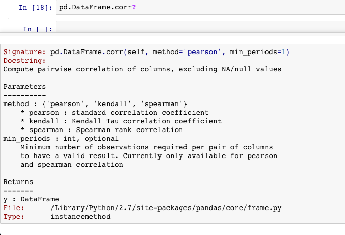

IC 的计算之 pearson，spearman，kendall
2017-09-13
写在前面
前几天在调试一个信号的时候，无意间发现算 ic 的时候一个缺失值对 ic 的影响很大，后来就查了查怎么这个 ic 的算法对结果影响会这么大呢。后来在 相关性分析 -pearson spearman kendall相关系数 这里看到了简明的对这三个相关性算法的分析，这里摘抄一下，就不重复做造轮子的活儿了。
pearson 算法
spearman 算法
spearman和kendall都是等级相关系数，亦即其值与两个相关变量的具体值无关，而仅仅与其值之间的大小关系有关。 spearman相关系数，亦即秩相关系数，根据随机变量的等级而不是其原始值衡量相关性的一种方法。 spearman相关系数的计算可以由计算pearson系数的方法,只需要把原随机变量中的原始数据替换成其在随机变量中的等级顺序即可:
(1,10,100,101)替换成(1,2,3,4)
(21,10,15,13)替换成(4,1,3,2)
然后求替换后的两个随机变量的pearson相关系数即可.
kendall 算法
kendall相关系数又称作和谐系数，也是一种等级相关系数，其计算方法如下：对于X,Y的两对观察值Xi,Yi和Xj,Yj,如果Xi<Yi并且Xj<Yj,或者Xi>Yi并且Xj>Yj，则称这两对观察值是和谐的，否则就是不和谐的。
总结
之前因为自己是用 pandas 里面的 corr 方法来计算 ic 的，然后 pandas 的 corr 默认采用 pearson 算法，所以一个异常值对结果的影响比较大，改成 spearman 方法后 ic 就稳定很多了。
